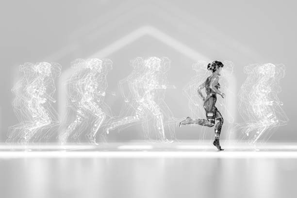

The Role of Technology in Enhancing Athlete Performance: A Game-Changer in Modern Sports
This article explores how technology is revolutionizing athlete performance
across various sports. It
covers advancements in wearable tech, data analytics, virtual reality training, and biomechanical
analysis. The article provides insights from experts, including coaches and athletes, on how these
technologies are being integrated into training regimens to optimize performance, prevent injuries, and
extend athletic careers. It also discusses the potential ethical concerns and the future of technology
in sports.
Read More
How Wearable Technology is Transforming Athlete Training Routines
This article focuses on the impact of wearable devices, such as smartwatches and fitness trackers, on
athlete training. It discusses how these devices provide real-time data on heart rate, sleep patterns,
and recovery times, allowing for more personalized and effective training plans.
Read More
Data Analytics in Sports: The New Frontier of Competitive Edge
This piece delves into how data analytics is being used by coaches and teams to gain a competitive
advantage. It highlights how data-driven insights can optimize training, strategy, and in-game
decision-making, leading to better performance outcomes.
Read More

Virtual Reality Training: Preparing Athletes for Real-World Scenarios
This article explores the use of virtual reality (VR) as a training tool for athletes. It discusses how
VR can simulate game situations, allowing athletes to practice and refine their skills in a controlled
environment, thereby improving their reaction times and decision-making abilities.
Read More

Biomechanical Analysis: The Science Behind Perfecting Athletic Performance
This article examines the role of biomechanical analysis in enhancing athletic performance. It explains
how detailed studies of movement patterns help in refining techniques, preventing injuries, and
improving overall efficiency.
Read More